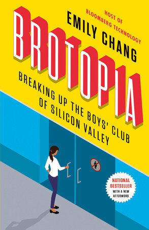

19:09 · 6 OPERE
Raniero Panzieri: cultura e politica.
Il filo del discorso
La lettura di Raniero Panzieri offre a Dr Divago un’occasione per discutere il rapporto fra cultura e impegno politico. Il ritratto dell’intellettuale socialista insiste sulla giustizia sociale e sull’autonomia del giudizio rispetto alle appartenenze di partito. La critica si estende alle istituzioni culturali e alla difficoltà, secondo il relatore, di riconoscere il valore del pensiero italiano. Un confronto sulle parole chiave del dibattito introduce il problema del significato perso nelle traduzioni. Il finale torna al saggio sull’uso capitalistico delle macchine e alla relazione fra razionalità tecnologica, organizzazione del lavoro e forme del dominio.
I libri nel discorso
Sull’uso capitalistico delle macchine nel neocapitalismo
Copertina della raccolta che contiene il saggio: Einaudi · Lotte operaie nello sviluppo capitalistico · a cura di Sandro Mancini · copertina di riferimento
Copertina della raccolta Einaudi a cura di Sandro Mancini. Il saggio è raccolto nel volume; l’immagine ha risoluzione limitata ma titolo e autore sono leggibili. Non è stata identificata l’edizione effettivamente usata nel video.
Il relatore annuncia il saggio sull’uso capitalistico delle macchine nel neocapitalismo; dal minuto 1031 legge la sezione Integrazione ed equilibrio del sistema.
Passaggio 7:53 ↗ · Fonti e libro ↗
A Silvia
Copertina della raccolta che contiene la poesia: Feltrinelli, Universale Economica I Classici, 2016 · Canti
Copertina dei Canti a cura di Ugo Dotti, Feltrinelli, 2016, raccolta che contiene A Silvia. Non è l’edizione accertata nel video.
Leopardi e A Silvia sono nominati nel confronto con il suo pensiero filosofico.
Passaggio 10:35 ↗ · Fonti e libro ↗
Zibaldone di pensieri
Copertina: Feltrinelli · Universale Economica, I classici
Il relatore nomina lo Zibaldone di Leopardi.
Passaggio 10:40 ↗ · Fonti e libro ↗
La società aperta e i suoi nemici
Identificazione probabile
Copertina: Armando Editore · Classici · 2018 · volume unico
Copertina autentica di riferimento, controllata visivamente. L’edizione non è identificata come quella usata nel video.
La società aperta e Popper sono richiamati, ma il titolo completo non è pronunciato: collegamento probabile al volume.
Passaggio 13:01 ↗ · Fonti e libro ↗
Retrotopia
Identificazione probabile
Copertina: Laterza · Economica 911 · 2020
Immagine autentica dell’opera, controllata visivamente; non identifica l’edizione usata nel video.
Retrotopia è richiamata come parola chiave già criticata; il collegamento al libro di Bauman è probabile.
Passaggio 13:36 ↗ · Fonti e libro ↗
Brotopia. Breaking Up the Boys’ Club of Silicon Valley
Identificazione probabile
Copertina: Portfolio · paperback · 2019
Immagine autentica dell’opera, controllata visivamente; non identifica l’edizione usata nel video.
È annunciato Brotopia come libro di una giornalista americana; il collegamento a Emily Chang è probabile.
Passaggio 13:53 ↗ · Fonti e libro ↗